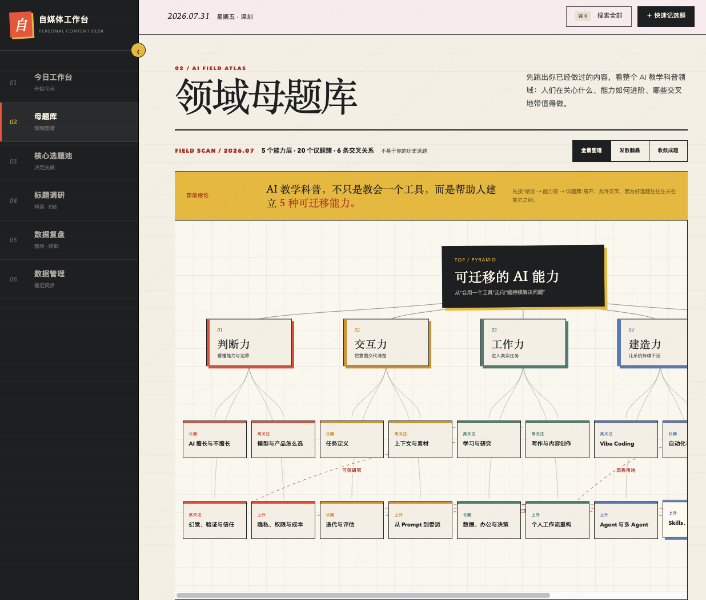

MISS 发行人 · 大白话讲 AI
Codex
小白完整教程
从安装配置，到工具、技能、插件、远程控制与自动化
给所有想一步到位的小白
课程地图 · 可上下滚动
先用一张图，看清这期的完整结构
01 · 先看结果
Codex 能完成的，不只是“写代码”
创建与修改
写网页、改文件、修问题、调整已有项目。
研究与分析
搜索资料、读取文档、整理信息、形成结论。
内容与视觉
生成文案、图片、网页素材，并继续修改。
操作与自动化
使用浏览器和桌面软件，让重复工作自动运行。
先把它理解成“能进入工作环境的执行者”，而不是一个更会聊天的搜索框。
01 · 智能体心智模型
模型负责思考，工具给它眼睛和手
🧠
模型
理解目标、判断下一步、做出选择。
＋
📃
上下文
告诉它现在面对什么项目、文件和规则。
＋
🔧
工具
读取、修改、运行、搜索、操作和连接外部服务。
观察 → 行动 → 检查 → 继续：这个循环让它可以持续推进，而不是只回答一次。
01 · 人机分工
你定义结果，Codex 推进任务，你根据证据验收
你
说清想得到什么：目标、背景、限制和完成标准。
Codex
进入环境并执行：读文件、调用工具、修改、运行和检查。
你
查看证据：修改差异、运行结果、测试和最终成品。
双方
继续调整：补充信息、纠正方向，直到满足完成标准。
01 · 使用入口
四种入口共享工作方式，但能力并不完全一样
| 入口 | 最适合 | 你需要知道 |
|---|---|---|
| 桌面应用 | 规划、审查、长任务和多任务协作 | 小白最容易建立全局视角 |
| 命令行 | 直接在终端处理本地项目 | 适合已经习惯终端的人 |
| 编辑器 | 边写边改、紧贴当前代码 | 适合开发过程中的即时协作 |
| 云端 | 把任务放到托管环境中运行 | 运行环境与本机并不相同 |
入口不是皮肤差异：运行位置、可用工具和适合的任务都可能不同。
02 · 安装与登录
第一次打开，只做三件事
步骤 01
安装并登录：从官方渠道获取与你设备匹配的 Codex。
步骤 02
选择入口：小白优先从桌面应用开始，需要时再转命令行或编辑器。
步骤 03
打开正确项目：不是随便选一个文件，而是进入完整的工作目录。
官方网址openai点com斜杠codex
文件在电脑里，不等于 Codex 已经进入了能运行它的项目环境。
02 · 模型配置
模型不用背名字，先看任务需要什么
简单、明确、需要快速反馈
优先速度和顺滑度
改一段文字、读取文件、做一次小调整，不必每次都开最高强度。
复杂、模糊、需要多步判断
提高推理强度
陌生项目、复杂计划、多处联动和高风险修改，更需要充分思考与验证。
模型、推理强度和速度都是起始设置；真正的选择标准是任务，而不是排行榜。
02 · 权限与沙箱
权限不是“全开”或“全关”
02 · 演示后只记三件事
不要问“它说做完了吗”，要看“证据够不够”
证据 01
修改对不对：是否只改了该改的文件和位置。
证据 02
结果能不能运行：项目是否启动、页面是否正常、命令是否成功。
证据 03
是否满足完成标准：最终成品有没有达到最初要求。
3A · 写好提示词
好提示词，不是写得长，而是说清四件事
目标最终想得到什么结果。
背景项目、受众、已有材料和当前状态。
限制哪些不能动、必须遵守什么、风险在哪里。
完成标准看到什么证据才算真正做完。
提示词的任务不是“显得专业”，而是减少 Codex 对结果的猜测。
3A · 对比演示
同一件事，提示词不同，执行路径就不同
模糊版本
我会给你一段我随手写的修改想法。帮我整理成一条发给设计师的说明，语气友好一点，重点说清楚我想改哪些地方，不用太长。
没有说明具体场景、输出结构、优先级，以及哪些内容不能替你拍板。
清晰版本
目标我会给你一段零散的修改想法，请整理成一条能直接发给设计师的界面修改说明，让设计师读完就能抓住这轮最重要的修改重点、不用来回确认，也能判断该先做什么。
背景这次改首页首屏，明天要过内部评审；偏“微调”，不是整版重做。
输出整理成 4–6 条，按优先级从高到低；每条具体到“改哪里、为什么改”。
边界语气保持合作感，别像下命令；别把“我在纠结要不要改”写成已拍板；别顺手扩出这轮范围外的新需求。
3A · 使用计划模式 Plan mode
小任务直接做，复杂任务先规划
直接执行
目标清楚，范围很小
- 改一处明确内容
- 读取和总结文件
- 修复一个具体问题
先用计划模式 Plan mode
背景复杂，存在多种路径
- 需要先理解陌生项目
- 会改动多个模块
- 验收方式还不清楚
好计划必须同时写清：做什么、按什么顺序、每一步怎样验证。
3B · 项目规则与技能
AGENTS.md 管项目规则，技能管做事方法
AGENTS.md
这个项目每次都必须遵守什么
运行命令、目录约定、代码规范、验证要求和已知陷阱。
技能（Skill）
这类任务每次都应该怎样完成
稳定步骤、参考资料、模板、脚本和验收方式。
当前任务指令只管这一轮；长期规则和可复用流程才需要沉淀。
3B · 放到正确位置
同一句要求，出现次数不同，去向就不同
只用一次
留在当前任务：不用为了这一句话改项目规则。
每次遵守
写进 AGENTS.md：它已经成为项目长期约定。
步骤反复
做成技能：把一套做事方法固定下来。
沉淀不是把所有内容永久保存，而是把稳定、重复、值得复用的部分放对位置。
3B · 边界
记忆帮助想起偏好，配置文件控制运行设置
| 内容 | 适合放什么 | 不要把它当成什么 |
|---|---|---|
| 记忆 | 个人偏好、长期背景、常用习惯 | 不能替代必须遵守的项目规则 |
| AGENTS.md | 项目约定、命令、验证要求 | 不要写成百科全书 |
| 技能（Skill） | 可复用工作流、脚本和参考资料 | 不要为了一个小要求就创建 |
3B · 热门技能
热门技能清单：按任务找，不按榜单装
图片生成生成和编辑图片，适合内容与网页素材。
前端设计搭建和改进网页、组件与交互界面。
表格处理读取、分析、创建和验证电子表格。
演示文稿制作、编辑和检查幻灯片。
技能创建器把反复使用的方法做成自己的技能。
技能发现当你不知道有没有现成能力时，用它寻找。
3C · 让它看
图片输入和应用截图，让 Codex 看见问题
图片输入
把截图、设计稿或错误画面交给它
适合分析视觉问题、对照设计、读取图中信息。
应用截图（Appshots）
把当前窗口和可读文字一起交给它
适合解释正在使用的软件界面和当前状态。
给图片仍要说清：看哪里、判断什么、最终想得到什么。
3C · 让它创造 · 重点演示
生成图片的价值，是直接进入工作流
3C · 让它操作
浏览器、Chrome 和电脑操作，分别什么时候用？
| 任务 | 优先选择 | 原因 |
|---|---|---|
| 搜索、查看或测试网页 | 内置浏览器 | 隔离清晰，适合让 Codex 自己测试 |
| 需要已有登录状态 | Chrome | 沿用你当前浏览器中的账号与页面 |
| 必须点击桌面软件 | 电脑操作 | 读取和操作 macOS、Windows 界面 |
| 存在稳定接口 | 插件或 MCP | 结构化工具通常更稳定、更容易重复 |
先选结构化、可验证的工具；只有必须操作界面时，才使用电脑操作。
3C · 外部工具
技能教方法，MCP 给能力，插件负责安装整套能力
技能告诉 Codex 应该怎样完成这类任务。
＋
MCP提供结构化工具和外部实时信息。
→
插件安装和分发技能、连接器、MCP 与相关资产。
电脑操作插件就是一个好例子：技能说明方法，MCP 提供操作能力，插件把它们装进来。
3C · 热门插件
热门插件清单：只装当前任务真正需要的
电脑操作操作桌面软件和系统界面。
Chrome使用你现有的浏览器登录状态。
GitHub读取仓库、议题、代码审查和合并请求。
云盘与文档连接 Google Drive、Notion 等私有资料。
沟通协作连接 Slack、Teams 等工作空间。
视觉工具连接 Canva、Adobe 等设计工作流。
插件会接触真实账号和数据：只用可信来源，并检查权限与工作区限制。
3D · 远程控制
远程控制，是你从手机继续指挥 Codex
查看
在手机上看线程、截图、终端输出、修改差异和测试结果。
判断
回答问题、批准下一步、改变方向或补充新的要求。
继续
文件、凭证和运行环境仍留在原来的电脑上，任务继续推进。
远程控制是“人远程管理 Codex”；电脑操作是“Codex 替人操作软件”。
3D · 自动运行
先把流程跑通，再让它定时或批量执行
跑通一次步骤、输入、输出和验证都明确。
→
定时任务按时间或节奏重复执行。
＋
codex exec接入脚本、批处理和持续集成。
自动化不是把不稳定流程定时重跑；它放大的是已经验证过的方法。
课程项目 · 把前面的能力组合起来
最后，我们一起做一个适合自己的工作台
把你的内容、方法和工具，整理成一个每天都愿意打开的工作空间。
- 看得清把信息、任务和知识集中起来
- 用得上把自己的规则和方法留下来
- 能生长让 Codex 帮你持续更新与自动化
最终项目 · 个人工作台
